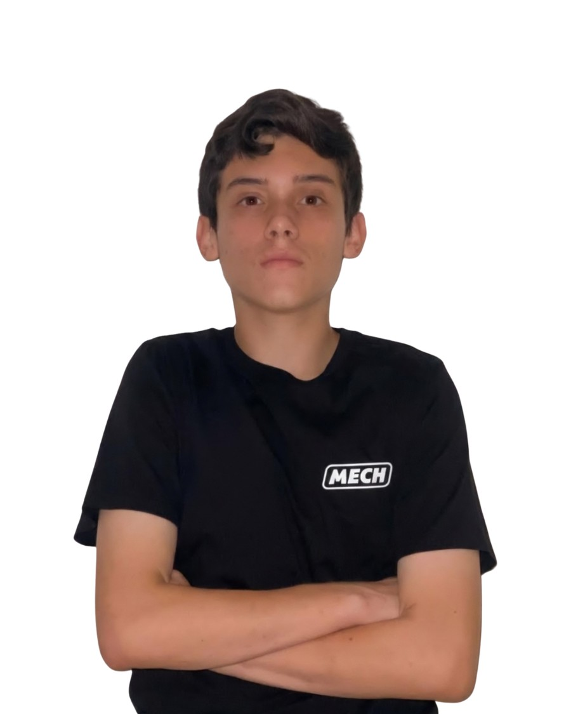
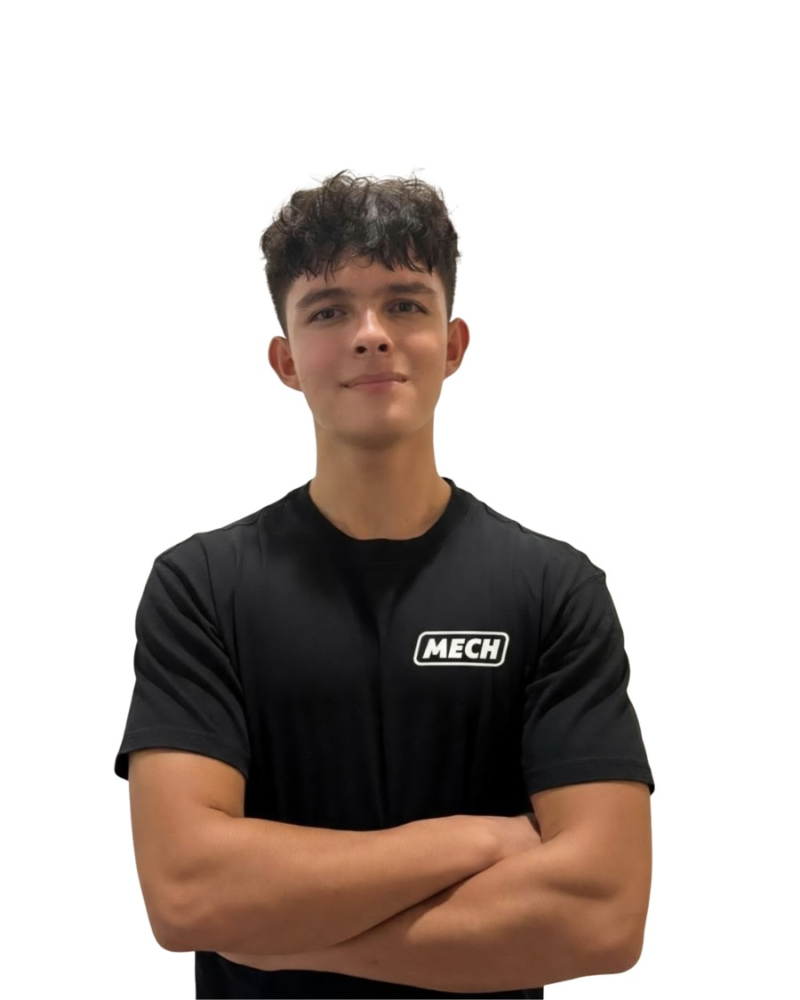
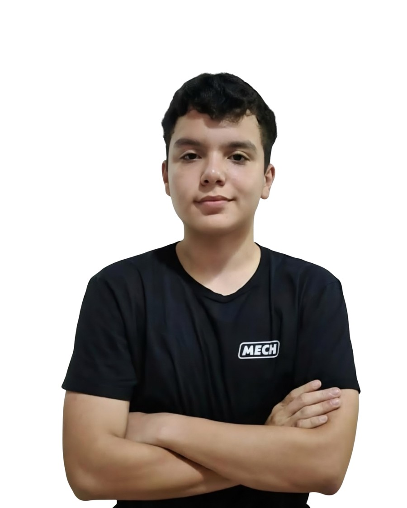

Multisensory
Experiencias con visión, tacto, movimiento y sonido. Un tema se vive con todos los sentidos, no solo se lee.
Una empresa tecnológica costarricense que construye espacios inmersivos para generar interés en las áreas con mayor beneficio para el desarrollo humano.
QUÉ SIGNIFICA M.E.C.H
Cada letra es un compromiso de diseño que todo lo que construimos debe cumplir.
Experiencias con visión, tacto, movimiento y sonido. Un tema se vive con todos los sentidos, no solo se lee.
Ingeniería integrada: sistemas físicos y mecatrónicos diseñados y ensamblados por el propio equipo.
Firmware propio que une lo digital con lo físico: la IA decide y los motores, luces y proyectores obedecen.
Diseñado para la experiencia humana: reacciona a las personas, escucha y responde en español.
PROPUESTA DE VALOR
ACTIVIDADES CLAVE
«Si es inmersivo, es MECH.» — Eslogan de la empresa
EL EQUIPO
Colegio Científico de Alajuela · Alajuela, Costa Rica

ENCARGADO EN MECATRÓNICA
Responsable del diseño de los sistemas mecatrónicos y de todo el desarrollo neuronal robótico: cada orden y tarea que el prototipo ejecuta nació de sus instrucciones, esquemas y diagramas de orquestación.

ENCARGADO EN MECÁNICA
Especialista de la parte mecánica. Supervisó la producción y materialización del robot cuidando que cada componente fuera amigable con el diseño, y fue clave para iterar prototipos hacia un ecosistema inmersivo funcional y estético.

ENCARGADO EN CIRCUITOS
El puente entre la estructura y el cerebro del robot. Desarrolló los sistemas de movimiento, energía, comunicación, sonido y visión, elementos clave para el funcionamiento y la sincronización del prototipo.
COLABORADORES CLAVE
Personas que aportaron componentes, conocimiento, tiempo de lección o ideas en momentos decisivos del proyecto.
PROFESOR
Clave para la adquisición de componentes.
PROFESORA
Clave para la obtención del proyector, webcam y otros componentes esenciales.
COLABORADOR EXTERNO
Clave para el ordenamiento del circuito del sistema de movilidad.
COLABORADOR EXTERNO
Clave para la manipulación de código.
COLABORADORA EXTERNA
Clave por sus recomendaciones sobre Arduino y Raspberry Pi.
PROFESORES
Cedieron lecciones para que se pudiera trabajar en el proyecto.
También Mariana Murillo (compañera), que aportó ideas para la decoración del robot.